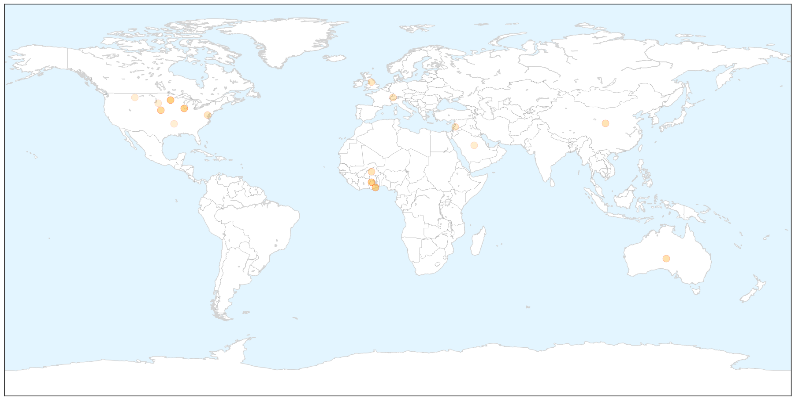

Toggle navigation
Early Warning
Return to Dashboard
Points of Interest
About the Project
Influenza
May 28, 2015
Compare to:
-
Dengue Fever
Hemmorhagic Fever
Mold/Fungal Infection
Meningitis
Pertussis / Whooping Cough
Middle East Respiratory Syndrome
Cholera
Hepatitis
Chikungunya
Yellow Fever
Bubonic Plague
West Nile Virus
Swine Flu
Ebola
Measles
Unknown
Mumps
30 Day Trends
Web: 0
alerts
, 0
warnings
Twitter: 5
alerts
, 0
warnings
Top Articles:
0.966
A Flu That's Infecting Thousands Of Dogs Could Move To Humans Next
0.956
Elderly hit hard by influenza this year
0.928
More new bird flu cases reported
0.885
No bird flu in Ghana yet – Hannah Bissiw
0.876
No bird flu in Ghana yet
0.865
Five Sample Tests Result Positive Of Bird flu In Ghana -
0.860
Research institute confirms bird flu in Ghana
0.781
Waterfowl to stay home from fair in Missoula this summer
0.769
Noguchi Memorial Institute confirms traces of Avian Flu in birds in Tema and Accra
0.753
Bird flu: Poultry farmers meeting to strategize
0.751
May 27, 2015 Archives
0.751
May 27, 2015 Archives
0.751
May 27, 2015 Archives
0.743
Fourth Case of Avian Influenza Found in Nebraska
0.699
90 Percent of World Chemical Weapons Said Destroyed
0.589
Yankton Press & Dakotan: Community
0.577
Veterinarian Shortage Leaves U.S. Vulnerable to Animal Illness Outbreak
0.570
10 incidents discovered at the nation's biolabs
0.534
South Dakota poultry exhibitions suspended
0.502
الاخبار المصورة
0.500
State officials advise fair boards to exclude waterfowl
Top Tweets:
No tweets found for May 28, 2015
Web/News Articles
X
Tweets
X
Article Locations
X

Article Confidences
X